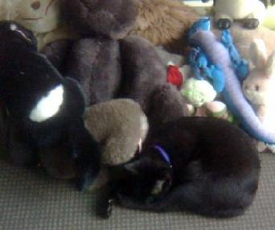
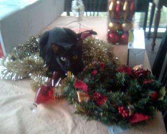

Cats have been a wonderful influence in my life.
I love seeing them grow from kittens and develop unique personalities.
Harry Heppenstall
Here is my favorite cat Harry. We got Harry in 1992 when I was 6 years old as a kitten. I would often dress him up in dolls clothes and push him around in a stroller.

Jack the Cat
Before him my parents had a cat called Jack. Which is now the name of my little brother. Jack was more of a tom cat and would spend a lot of time away from home chasing lady cats.

Arwen Heath
After I brought my first home in 2009 my first stop was to the RSPCA to pick up a 2 year old black, almost Burmese, cat I renamed Arwen. Arwen is very adventurous cat and often finds herself getting into trouble!



© 2013 Rhiana Heath Freelance. All Rights Reserved